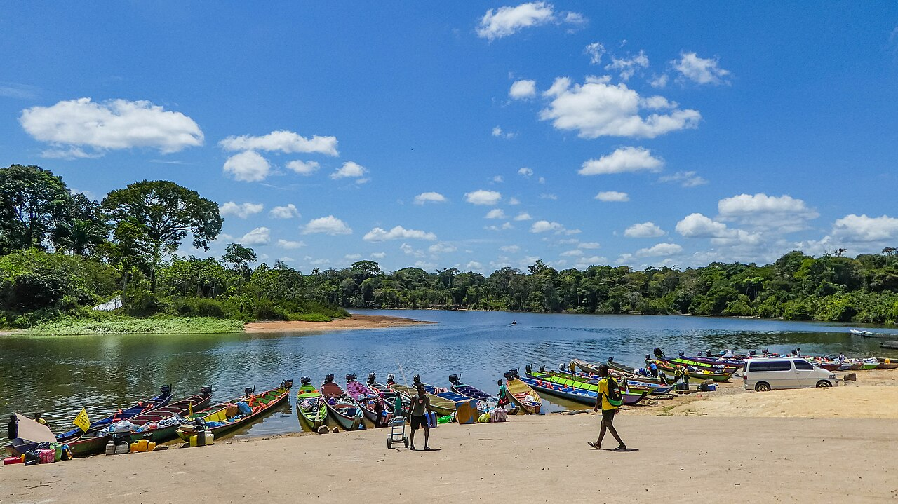
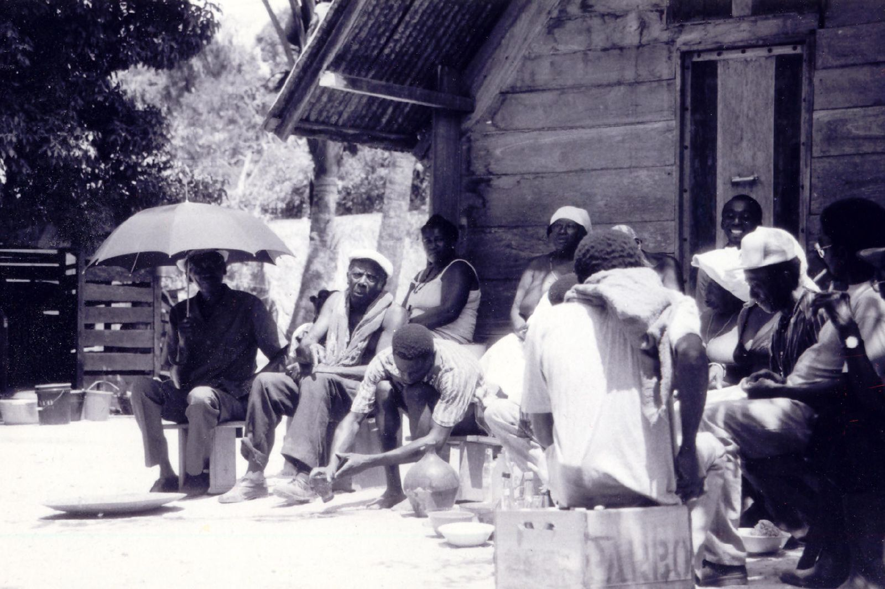

Adventures Await
Things to Do
From deep jungle expeditions to cultural immersion.
🌿
Jungle Trekking
Multi-day guided expeditions through primary rainforest with expert Amerindian guides.
Find out more →
🛶River Canoe Tours
Glide through the Amazon basin on traditional dugout canoes, spotting caimans and river dolphins.
Find out more → 🦜
🦜
Bird Watching
Suriname is a birder's paradise — spot 700+ species including scarlet macaws and harpy eagles.
Find out more →
🏘️
Indigenous Village Tours
Visit Trio and Wayana indigenous communities in the deep interior, preserving ancient traditions.
Find out more →
🥁Maroon Village Tours
Experience the living culture of the Saramacca and Matawai Maroon peoples — music, craft and history.
Find out more →
🏙️
Paramaribo City Walk
Explore the UNESCO-listed historic inner city on foot — the only wooden colonial city in the Americas.
Find out more →